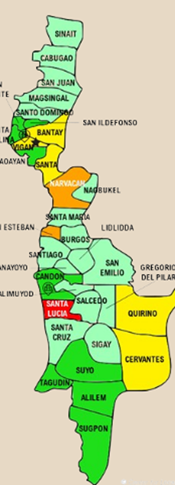

Ilocos Sur is a timeless tapestry of culture and charm. With its deep respect for history and craftmanship, the province invites you to slow down and savor tradition. From local arts to age-old practices, everything is woven with care and pride. It’s a living museum with a heart that still beats strong.
This shows the statistics about the languages spoken in the area.
